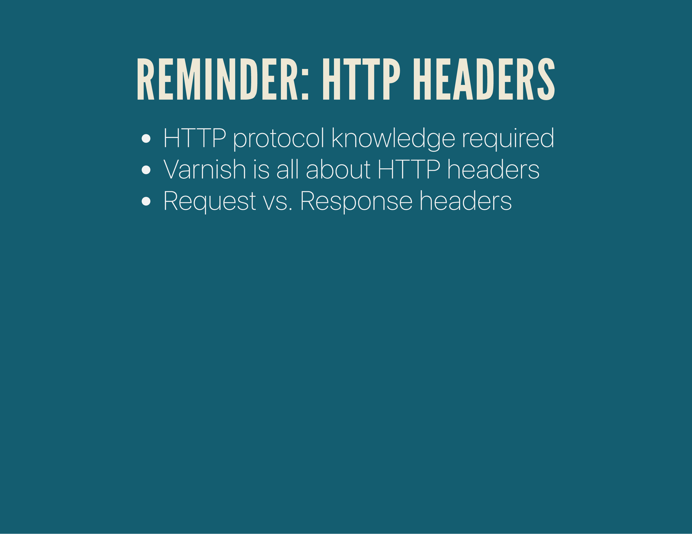
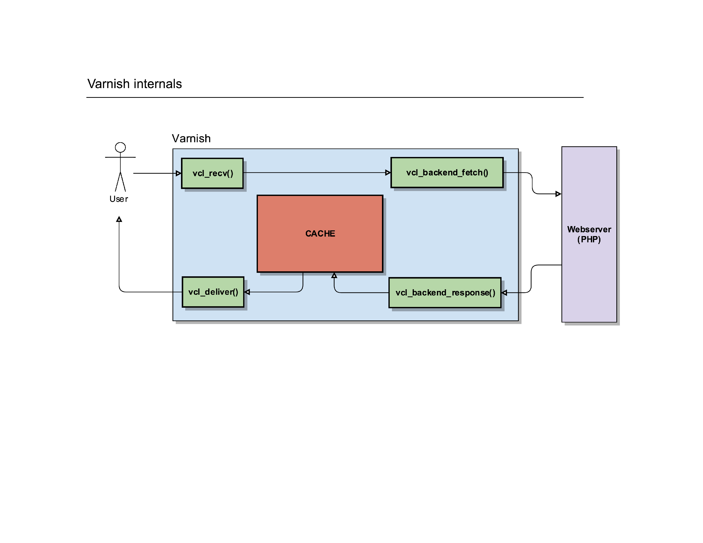

A few months ago, I gave a presentation at LaraconEU in Amsterdam titled "Varnish for PHP developers". The generic title of that presentation is actually Varnish Explained and this is a write-up of that presentation, the video and the slides.
This is the recording of the talk at LaraconEU on August 2016.
Varnish Explained
Here's a write-up per slide, with the most important topics.
(Alternatively, if you prefer to just skim through the slides, they are up on Speakerdeck too.)
In order to fully understand Varnish, it's vital that you understand the HTTP protocol (at least the basics) and how its HTTP headers are formed and which purpose they serve.
Later on, I'll cover the Varnish internals, cool acronyms like ESI, Grace, TTL & more.
A quick introduction: I'm Mattias Geniar, I'm the Support/Operations manager at Nucleus Hosting in Belgium.
I run the cron.weekly linux & open source newsletter and, when I find the time, host the SysCast podcast.
Part One: What's Varnish?
Let's go.
Varnish can do a lot of things, but it's mostly known as a reverse HTTP proxy. It brands itself as an HTTP accelerator, making HTTP requests faster by caching them.
It can also serve as a TCP load balancer (using pipe in the VCL code, more on that later), an HTTP load balancer or a generic reverse proxy.
It uses the Varnish Configuration Language (VCL) to allow you as a developer or sysadmin to modify the behaviour of Varnish and to play with the HTTP protocol to shape it so it behaves the way you want.
Varnish is also extendable with VMODs, modules that can be loaded by varnish and provide additional functions/methods and functionality you can call upon in your VCL configurations. Think of these like PHP extensions; binary files that are loaded by Varnish that extend the userspace in which you can create VCL configurations.
A couple of important versions: Varnish 3.x is probably the most widely used, but is now EOL (so: no more security updates). Varnish 4.1 is still supported and Varnish 5 came out a few weeks ago (so the slides are slightly outdated).
If you're upgrading from Varnish 3.x to later: beware, the configurations changed drastically. You'll need to update your syntax/methods in Varnish, or Varnish won't start.
Using Varnish in your infrastructure gives you a couple of advantages: performance, scalability, control & security.
Varnish is usually associated with performance, but it greatly increases your options to scale your infrastructure (load balancing, failover backends etc) and adds a security layer right out of the box: you can easily let Varnish protect you from the httpoxy vulnerability or slowloris type attacks.
Part Deux: HTTP Headers
Let's talk HTTP headers.

A quick summary of HTTP headers: there are request and response headers (basically what your User Agent (=browser) requests and what the Server (Apache/Nginx) responds) and Varnish listens to these by default to determine if requests can or should be cached.
Whenever your browser goes to a certain website, it'll a do a few low-level things: it'll resolve the DNS of the hostname you want to browse to, open a TCP connection to that IP and start sending the HTTP request headers.
They are basically a new-line separated key/value pair. The concepts are the same in HTTP/2, except it's binary and more structured.
The browser describes the kind of response it can receive (plain text, compressed), what site it wants to load (because remember, the browser just connected to the IP, it now needs to tell the webserver which website at that IP address it wants to load).
If all goes well, the server will respond with a similar set of headers: the response headers. It will confirm the HTTP protocol (or down/up-grade the protocol), give a status code and describe the response (plain text / compressed).
Good, that was the HTTP reminder -- now let's get to Varnish.
Part Three: How does Varnish work?
Go!
Varnish is a reverse proxy, so it sits between the User Agent (the browser) and the webserver. It makes decisions to either deliver a cached version of the page, or send the request to the backend webserver for processing.
By default, it'll do so by listening to the HTTP headers the client sends as well as the ones the server responds with. But, those usually suck -- creating the need for proper Varnish templates to avoid boilerplate code being re-created all the time.
In a normal scenario, the browser probably connects directly to the webserver, which in turn will let PHP execute the request. The simplest possible setup.
When Varnish is introduced, a few things happen: the webserver is hidden to the user, as that user now only connects to Varnish. Varnish has bound itself on port :80 and the webserver is either running on a different server or on an alternative port. It's Varnish that will make the connection to the webserver if needed, the user has no idea.
If you follow the official Varnish book, the "internals of Varnish" are described as this. While it's 100% correct, if you're new to Varnish, that image does you no good: it's scary, confusing and it teaches you nothing.
Instead of such a flowchart, I prefer to visualise Varnish slightly different.
Let's start with a basic example: a user tries to connect to a server running Varnish. It'll make a connection to the port where Varnish is running and Varnish can start to process the request.
It'll trigger a routine in Varnish called vcl_recv().
It's a routine where you can write custom VCL code to manipulate requests, determine backends, redirect users, ... it gives you full control over the HTTP request of the user.
After that routine, Varnish can do a cache lookup: the page the user is requesting, does it already exist in the cache?
If it does, it can serve that page to the user. Before it does that, it triggers a new internal routine called vcl_deliver(). It's another place in Varnish where you can manipulate the request, change the HTTP headers etc.
Once that request is finished, Varnish sends the response to the user so he can render it on screen.
Of course, not everything is a cache hit: if Varnish does a cache lookup but finds it doesn't have that object/request in the cache, it has to go and fetch that content from its own backend.
To do so, it'll trigger another internal routine called vcl_backend_fetcht().
You guessed it, it's yet another place where you can further manipulate the request before it gets sent to the backend webserver(s).
That routine will eventually call out to another webserver and have it process the request the user made.
Once the response was created on the backend webserver, Varnish will receive it and fire another routine: vcl_backend_response().
Hey, yet another place to play with the HTTP protocol and change the headers etc. before Varnish will process the request internally.

Varnish can then store the item in its cache (if it's cacheable) and deliver it to the client, via the same vcl_deliver() routine.
Pfew, what a ride!
Part Four: The Varnish Configuration Language
Now that you have a visual of the flows within Varnish, let's see what the configurations look like.
The Varnish Configuration Language is a C-like language, which should be familiar to those writing PHP or JavaScript code.
It looks like the screenshot above, where routines are described using the sub keyword. For a complete example, have a look at my varnish 4.x configuration templates.
Each of those routines I described earlier allow you to customise the HTTP request with that VCL language.
To do so, it offers you a few useful objects: req, req.http, ... Each of those objects represent a part of the HTTP protocol. There's req.method to indicate a GET, POST, PUT, PURGE, ...
There's req.http which contains all the raw HTTP headers sent by the client, so there's req.http.host for the Host-header, req.http.User-Agent for the User-Agent (Chrome/Firefox) of the client, ...
Just like the HTTP protocol itself, the HTTP headers are case insensitive. So req.http.HOST is the same as req.http.host. But do yourself a favour, pick a coding/style standard you like and stick to it.
In the example above we tell Varnish, in the vcl_recv() routine (the very first routine to be called by Varnish) to only deal with GET or HEAD requests. Anything with a different method (a POST, PUT, ...) will be sent to the backend webserver(s) via the return (pass); command, indicating that the request should be passed on to the backend.
Further down, we manipulate the cookies the client has set. This is probably the part where Varnish has thought me the most about the HTTP protocol! As a user, every cookie that is set on a particular domain gets sent to the server for every request. It's a single string, semi-colon delimited. You can change the value of cookies in Varnish, remove or add cookies, etc.
You can also use Varnish to be a "dumb load balancer": it can look at the Host header sent by the user and redirect requests to different backends.
This would allow you to set up a single Varnish server which can send requests to multiple backend servers, depending on the site the user is requesting.
The set req.backend = xxx; code instructs varnish to use a particular backend for that HTTP request.
A common task in Varnish is dealing with Cookies (more tips on that later by the way) and removing cookies for objects or HTTP requests that don't need them.
A typical example is content like CSS, JavaScript, images, ... whether cookies are set or not, chances are that the image won't change. So we remove cookies altogether to determine the cacheability of such an object.
Alternatively, we could also modify the response the webserver has sent us, in case it was a cache miss.
If a webserver wants to set a new cookie, it'll send along one or multiple Set-Cookie headers. In Varnish, we can remove those headers by removing the bereq.http.Set-Cookie header, making it look like the webserver never even sent those requests in the first place!
Another interesting trick is to tell Varnish to never cache a response when it's an server error, something with a status code in the HTTP/500 range. By telling it to reply with return (abandon); it'll bail out that routine and exit the flow.
In the vcl_deliver(); routine you have a final place, right before the HTTP response is sent to your user, to add or remove HTTP headers.
I commonly use this to clean up the request: remove sensitive headers (like Apache or PHP version numbers), add some debug headers to indicate if it was a cache miss or hit, ...
Having so many places to tinker with the request and response can make it hard to visualise where changes were happening and what the outcome would/could be. It can also make you question what's the best place to even begin to manipulate such a request.
To be honest: there's no right or wrong answer here. It depends on your setup. But, there are a couple of tricks to help work with Varnish.
For example, let's run through a request in Varnish and see where/how we can play with it.
In this example, a user wants to connect to our server and load the laravel.com homepage. It sends a request to load the / page (homepage) indicating that it's the Chrome User-Agent.
When Varnish receives that request, it'll start its vcl_recv() routine.
In that vcl_recv routine, we can manipulate the request.
For instance, we can change the request so that it no longer wants to load laravel.com but forge.laravel.com, by setting a new value in the req.http.host object.
Important to know here: the user/client has no idea we're doing this. This is purely internally in Varnish. For the user, it still thinks it's going to receive a response for laravel.com!
Varnish will use that new information (the modified req.http.host and req.http.User-Agent) to check its cache if it has a response it can serve to the client. In this example, we'll assume it was a cache miss.
So now Varnish has to fetch the content from its own backend webserver. But because we modified the request in vcl_recv(), Varnish will ask the backend for the website behind forge.laravel.com, claiming to be an IE5 User-Agent.
The webserver does its thing, and if all goes well it can generate the homeapge for forge.laravel.com.
It'll respond with an HTTP/200 status code, indicating everything was OK. It will also set a PHP session ID, tell that it was generated with the Apache Webserver and indicate that this HTTP response should not be cached, by setting a Cache-Control: No-Cache header.
Varnish receives that response and triggers its routine vcl_backend_response(), where we can modify what the webserver sent us.
Even though the webserver said we should not cache the page (remember: Cache-Control: No-Cache), and Varnish would by default listen to that header and not cache the page, we can overwrite it by setting the beresp.ttl object. The TTL -- or Time To Live -- determines how long we can cache that object.
Additionally, we will overwrite the status code that the webserver sent us (HTTP/200) with one that we invented (HTTP/123).
And finally, we'll remove that Laravel session ID that was generated server side by removing the beresp.http.Set-Cookie header.
After all that fiddling with the HTTP response, Varnish will store the object in its cache using our modified parameters. So it'll store that object as an HTTP/123 response without cookies, even though the server generated an HTTP/200, with cookies and clearly indicated the page shouldn't be cached.
So what eventually gets delivered to the client is a page for forge.laravel.com (our client requested laravel.com) with an HTTP status code of HTTP/123 (the server actually said it was an HTTP/200), without cookies being set.
Such Varnish power. Much amaze. So many places to fuck things up.
There's another important Varnish routine though, it's called vcl_hash(). This is where Varnish decides which parameters it will use to determine its cache/hash key. If the key can match an object already in the cache, it will deliver that object.
By default, Varnish looks at 3 key parameters: the Host-header, the URL being requested and the cookies sent by the client.
Behind the scenes, it will take care of the Content-Encoding that clients can request: it'll store a compressed version of every page in memory, but if a client requests a plain text -- non-compressed -- version, it'll decompress it on the way out and deliver a plain text version to the client.
If any of the parameters inside the vcl_hash() routine changes, Varnish will consider it a new HTTP request and the cache lookup will fail.
If you were thinking ahead, you can see a problem with that kind of hash-key determination.
For instance, the URL /?page=1&languange=nl will show the same content as /?language=nl&page=1, but since the order of the parameters is different, the hash will be different. To resolve this, we normalise the incoming requests as much as possible.
Varnish offers a good tool for this called std.querysort(), which will sort the query parameters alphabetically.
Additionally, you might want to strip query parameters that are irrelevant to the backend, like Google Analytics campaign trackers.
Once you normalised the URL, cookies are the Next Big Thing.
Because they are by default used in the hash-key lookup, any change in the cookies client-side will result in a different hash and a new object in the cache.
If every one of your users has a unique PHP session ID, every Cookie set will be different and thus every hash-key will be unique. Just setting a unique PHP session ID for all your users would effectively destroy caching for your site, as every request is unique.
There are a couple of fixes for this, but the biggest one is to only initialise a PHP session when you need it (ie: on the login page), and not for every page. This is called lazy session initialisation.
Alternatively, some XSRF implementations rely on cookies and should be unique per user too.
Varnish offers an interesting VMOD (extension to Varnish) to help manipulate Cookies.
The cookie.parse object allows to you do interesting things like whitelisting cookies in Varnish, without crazy mind-breaking regular expressions.
In addition, the Host header is also a key in your hashing. So a request for laravel.com and www.laravel.com, even though they're probably the same site, would result in 2 different cached objects in Varnish.
To help Varnish, it's best to redirect users to a single domain and not keep multiple possible domains that would result in the same content being generated.
There are plenty of SEO & technical reasons this is a good move too.
The code example above detects a page without the www-subdomain and triggers a synthetic response in Varnish, via the new vcl_synth() routine.
In that routine, you can detect the resp.status object and create logic handling that differently. In this case, we set a custom error code of 720 in order to replace the Location block in the HTTP response and force a 301 redirect.
That same vcl_hash() can be expended to take any HTTP header into account when determining the cache key. It can add Authorization headers for basic HTTP authentication, custom headers for your API, ...
We also use it at Nucleus to separate cache responses for HTTP vs. HTTPS content, since we often use an Nginx TLS proxy in front of Varnish.
Part Five: Flushing the Cache
There are actually more than 2 hard things in computer science: naming things, cache invalidation, off-by-one errors, DNS, Docker, ...
There are basically 3 ways to flush a cache: the old PURGE HTTP method (which is basically obsoleted), the newer "ban" method (suggested) or the absolute lazy way: restart your varnish service.
The HTTP PURGE method is a "special" HTTP request where you can set the method to PURGE. That in and of itself doesn't actually do anything, but it allows you to catch that special method in varnish's vcl_recv() routine (the very first routine Varnish will call when it receives a request) and trigger an internal cache flush via the return (purge); call.
The preferred way is actually to use "bans": this uses the Varnish Administration CLI tool called varnishadm to connect to a running Varnish daemon on its administrative port and send it control commands.
This syntax gives you more flexibility to flush content based on regex's, either on the host, the URL or arbitrary headers.
Part Six: ESI, TTL's, Grace & Saint
More acronyms! More!
Edge Side Includes are a very powerful but tricky feature of Varnish. By default, Varnish will either cache an entire page, or not cache an entire page.
With ESI, Varnish can cache parts of a page. Funky, right?
In a way, this works very similar to PHP's include or require method or the old Server Side Includes in webservers.
Take for instance a default layout for a news website: it'll contain a personal greeting at the top, some ads, some navigation and the main body.
These different "fragments" that usually build a page are what Varnish needs to be able to do partial caching.
Instead of generating the content for each partial directly in the HTML/DOM of the page, you generate special esi:include tags instead.
Eventually, your server-side generated HTML looks like this. It has several esi:include blocks, where it would normally have either include/require statements from PHP. But instead of having PHP do the combining of the page, those esi:include tags are going to be interpreted by Varnish.
When Varnish processes a vcl_backend_response(), it can look inside the body and detect those esi:include tags.
For each of those ESI tags, it will -- on its own -- send a new request to the backend and request those URLs. The backend will in turn process them, reply them back to Varnish, and Varnish will build the page by glueing all the fragments together.
The biggest benefit is that each fragment can have its own caching policy: in the best case scenario, all those esi:include calls were already in the Varnish cache and it could assemble the page entirely from memory.
The magic of ESI is that the user just requested a single page, it had no idea that it would in turn fire of multiple small requests to the backend to assemble that page before getting it delivered.
Now, by default, Varnish will look at the Cache-Control headers (or ETAG, Expires, ...) to determine how long it can cache an object. In the absolute best case scenario, the HTTP response headers determine the lifetime of each HTTP response.
But you can artificially overwrite that response by setting a new value in the beresp.ttl object.

The TTL or cache lifetime can be modified even further by introducing the concept of Grace Mode.
You can let Varnish keep objects in its cache that have actually surpassed their lifetime. This is useful in case your backends are down; it's better to serve old content, than no content.
It's also of value when there are HTTP requests coming in for expired objects: Varnish can reply with a slightly outdated response, while asynchronously fetching a new version from the backend. Your user never needs to wait for that response (it got a slightly outdated response), while your webserver can generate the response.
This is absolutely a lifesaver in cache stampedes scenario's, where Varnish will only send a single request to the backend, even though 100+ users are requesting the same page.
Bonus: CLI tools
Quick demo: some CLI tools.
varnishhist shows a histogram of the requests currently being served by Varnish: the more to the left they are shown, the faster they have been served. These are generally more cache hits, as they're served the fastest.
The more items to the right, the slower each request is.
A pipe sign | is a cache hit, a hashtag # is a cache miss (can also be a cache miss on purpose, if the VCL code says return (pass);).
varnishhist is a good quick glance to see if Varnish is caching anything and if so, what the overal ratio is: lots of cache hits or misses. But beyond that, the tool probably won't tell you that much.
varnishlog on the other hand is the real gem: it will show in great detail the request headers of a user and the response headers returned by Varnish. If you really need to debug Varnish, this'll be the tool that tells you the most.
There are filters you can apply to only log requests from a certain IP (ie: your source IP), only log requests matching a certain URL pattern, you can see which cookies are being stripped in the VCL and which aren't, etc.
The only downside: varnishlog can be a bit daunting at first with lots of output, it takes a while to grok the format.
Another interesting one, especially when just getting started with Varnish, is varnishncsa: it takes the complicated varnishlog and shows the output just like the Apache or Nginx access logs.
It won't tell you many details (like which cookies get stripped, which VCL routines got triggered etc.), but it will tell you in a more readable format (or at least: a format you're more used to) which requests Varnish is serving.
You can also run varnishncsa as a daemon/service to log all requests made by Varnish in this format, a bit like the default behaviour in Apache or Nginx. For debugging purposes, this could be useful.
Part Seven: getting started with Varnish
Let's get started.
This is the really short version of getting started with Varnish;
- Download my Varnish templates from Github
- Install varnish, by default it'll run on a custom port (check
/etc/sysconfig/varnish) - Configure your backend so that it points to your existing Apache/Nginx
- Test your site on the custom port:
domain.tld:8080 - If everything still works, swap the ports: set your Apache/Nginx on port :8080, move Varnish to port :80 and change the backends in Varnish so that it sends its requests to port :8080.
After that, you're done: Varnish now serves all requests on port :80 and will proxy everything it can't serve to port :8080.
Chances are, it'll take longer to implement Varnish than just those couple of steps, but that's basically the gist of it. Run Varnish on an alternative port, so that you can test it safely without interfering with your site, and once it's tested and approved, swap out the ports and let it run on port :80.
A couple of tips, that might help you get started quicker;
- Varnish Agent: an HTML frontend to manage & monitor your varnish installation
- Syntax highlighting of VCL files in Sublime Text
- Troubleshooting Varnish on systemd, if it won't start
- Some useful varnishlog oneliners to help troubleshoot
As with everything: testing, testing & testing is what will make Varnish deployment a success!
The end!
For any questions, leave a comment on this blog, poke me on Twitter, send me an e-mail, ...